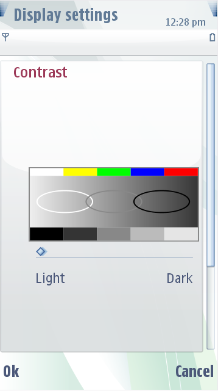
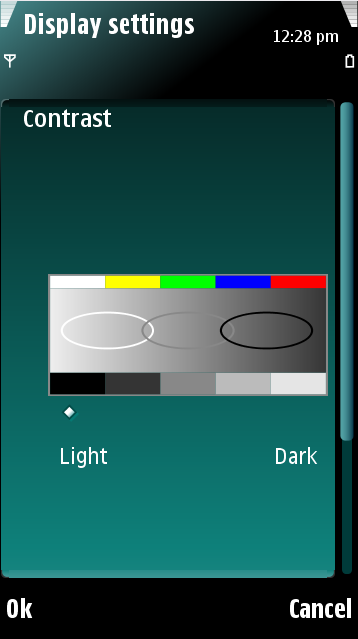

Slider Indicators
Sliders measure levels, and are used in the user interface (UI) in a
similar way as volume indicators. However, sliders are not limited to a
number of adjustable steps. The slider images consist of:
- Slider line
- Slider marker
You can replace the slider marker image. The slider is used in
different layouts:
Settings
lists
The settings list sliders are displayed on top of the settings item
background.
Edited
settings items
The edited settings sliders are displayed when a settings item is
opened for editing. The background used is the one designed for the
settings option item area.
The figure below illustrates a default settings slider and an
edited settings slider.
 
Figure:
Default settings
slider and an
edited settings slider